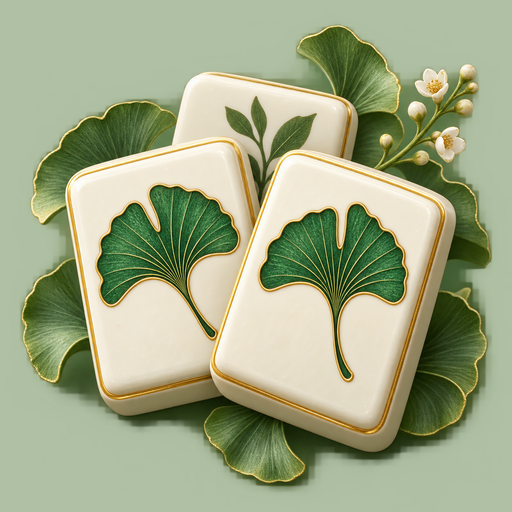

Tile Trails
Mahjong solitaire along a trail of quiet gardens. Match free pairs, open the layers.
Tile Trails is mahjong solitaire set along a trail of illustrated gardens. Find two identical free tiles, remove the pair and reveal the layers underneath. Every starting board is generated with a valid solution, but the order you open things up decides whether you get there, so each pick matters. Boards come in different sizes as you move from garden to garden, and there is a daily challenge alongside the journey. The tile patterns are distinctive and the layered boards stay clear to read. Undo recent moves freely and use three free hints per round. If you paint yourself into a corner, a free rescue rearranges the remaining tiles into a solvable open layout. Leave mid-game and your board is saved. Core puzzles work offline, with no account and no in-app purchases. Optional rewarded videos give extra hints or rescues, and occasional ads show between finished rounds. Available in English, Spanish and Brazilian Portuguese.